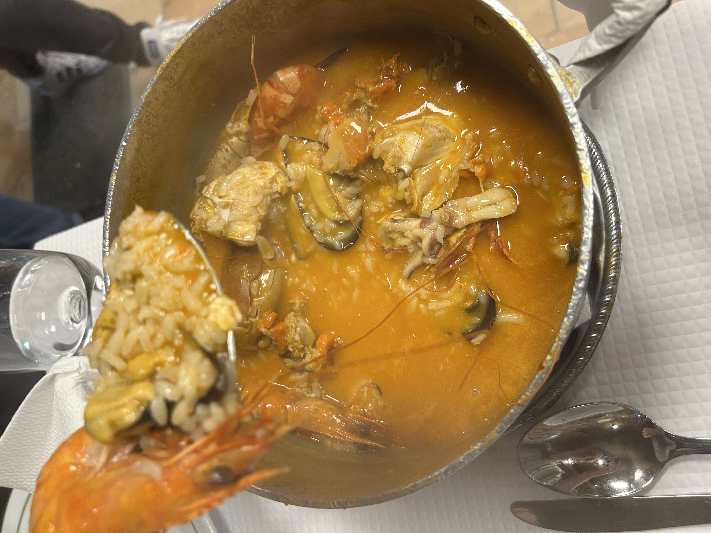
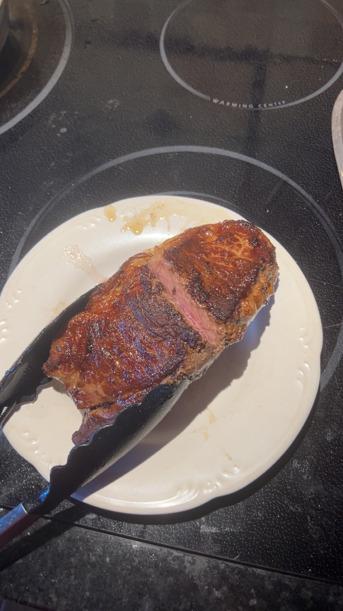
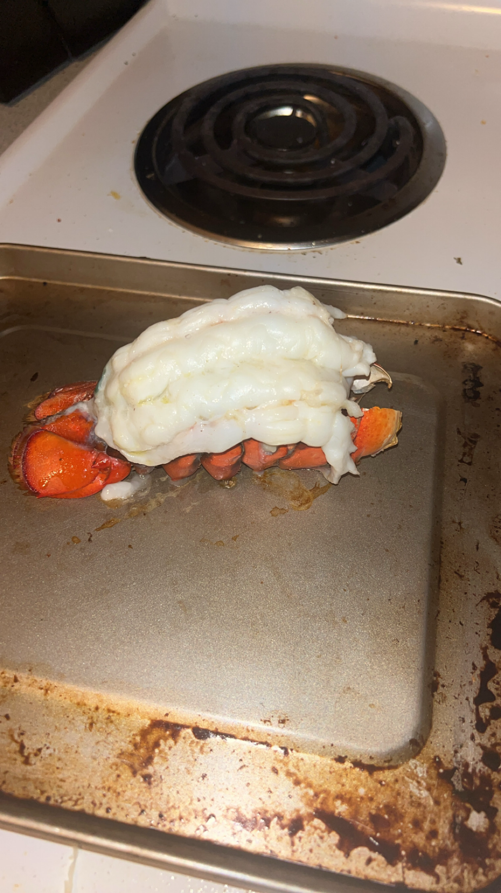

I love so many kinds of foods. But I especially love seafood and steak. I love getting it from good restaurants but also making it myself. Here are some images of foods I've made or got at restaurants
Paella I got in Lisbon
A New York Strip I made the other day
A lobster tail I made the other month as they were on sale after valentines day

Paella with all different kinds of seafood

Steak I made. I like to make them medium rare with a nice seared crust

A lobster tail I broiled. I prefer these foods cooked simply as they already have so much good flavor